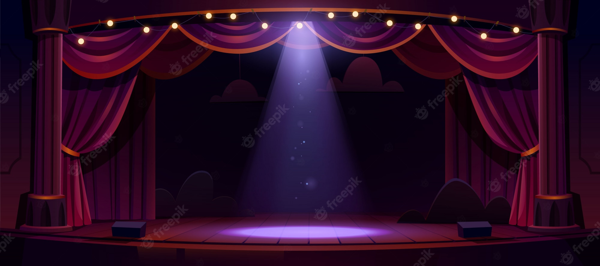

Outros Projetos
Desenvolvimento e Produção de Peças Teatrais
Durante o ensino médio e fundamental tive a oportunidade de participar da produção de peças teatrais dentro do ambiente escolar, montando e escrevendo roteiros, executando a sonoplastia, administrando o backstage e atuando como personagem em certas ocasiões. Acredito que esta oportunidade foi muito valiosa, pois fui capaz de expandir meu repertório, melhorar minha comunicação e expandir minha desenvoltura
Olimpíada de Redação e Concursos Culturais
Ainda durante o ensino médio participei de olimpiadas internas de redação do tipo dissertativa argumentativa, onde obtive medalhas de primeiro e segundo lugar ao decorrer de 2 anos. Também tive a oportunidade de participar de concursos culturais relacionados a escrita e produções textuais durante o período de escola, na qual em duas oportunidades fui campeão, em uma dessas ocasiôes deveria escrever matérias do tipo jornalístico para um site de cultura Pop e na outra deveria escrever uma história livre acerca do aquecimento global e reciclagem. Acredito que esta experiência colaborou muito com meu desenvolvimento, pois melhorei minha escrita e argumentação, além de expandir minhas habilidades comunicativas como um todo
← Voltar ao portfolio